library(tidyverse)
library(scales)
library(RColorBrewer)
library(ggrepel)4 Core ggplot2
4.1 Learning Goals
By the end of this chapter, the main goals are:
- compare base R graphics with
ggplot2 - understand the grammar of graphics at a practical level
- build plots from
ggplot(),aes(), and geoms - use the
+operator to build a visualization pipeline - distinguish mapped aesthetics from fixed aesthetics
- add scatterplot layers, smoothers, log scales, and labels
- apply built-in themes and color palettes
- use continuous color and size scales
- label points with text using
geom_text()andgeom_text_repel()
4.2 Load Packages
ggplot2 is part of the tidyverse. The scales package is useful for readable axis labels. RColorBrewer is used later in the color palettes section. ggrepel provides geom_text_repel() for non-overlapping text labels.
4.3 Data For This Chapter
The main examples use the local Gapminder country-year dataset in Data/gapminder/gapminder.csv.
gap <- read_csv("Data/gapminder/gapminder.csv", show_col_types = FALSE)
gap_2007 <- gap |>
filter(year == max(year, na.rm = TRUE))
gap_20074.4 Comparing Base R Graphics And ggplot2
Base R has plotting functions built in. They are useful for quick checks and appear in many older examples.
plot(gap_2007$gdpPercap, gap_2007$lifeExp)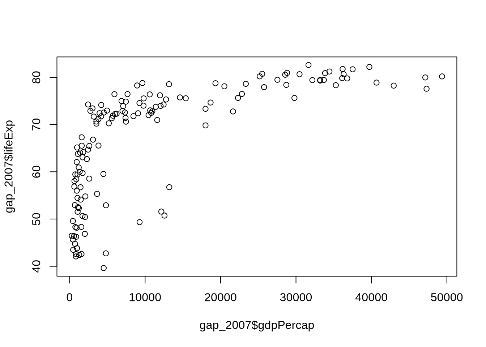
That plot works, but the labels are not very informative, the x-axis is hard to read, and customization quickly becomes a matter of remembering many arguments.
A base R histogram shows a similar pattern:
hist(gap_2007$lifeExp, breaks = 8)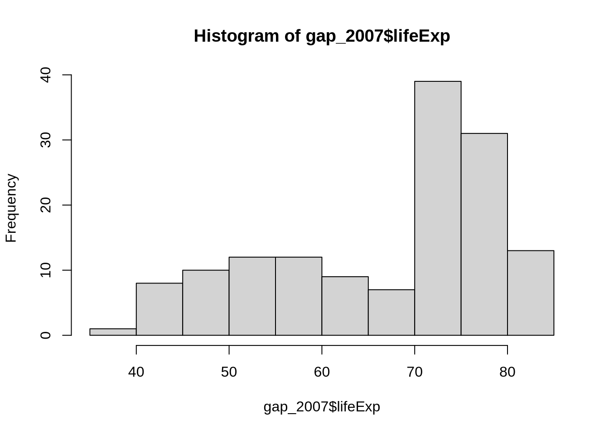
The problem is not that base R cannot make plots. The problem is that complex plots become difficult to revise. ggplot2 gives us a more structured way to build visualizations.
4.5 The Grammar Of Graphics
A ggplot2 figure is built in layers. Every plot needs three minimum elements before any layer can sit on top of them:
- data: the table being plotted
- mappings: the links between variables and visual features
- geoms: the visual marks, such as points, lines, bars, or histograms
This separation is what makes ggplot2 powerful. You can change the data, the mapping, or the geom without rewriting the whole plot from scratch.
4.6 The Base Layer: ggplot() And aes()
The ggplot() function starts a plot. The aes() function defines aesthetic mappings. Aesthetic mappings connect variables in the data to visual properties such as x-position, y-position, color, size, shape, or transparency.
ggplot(
data = gap_2007,
mapping = aes(x = gdpPercap, y = lifeExp)
)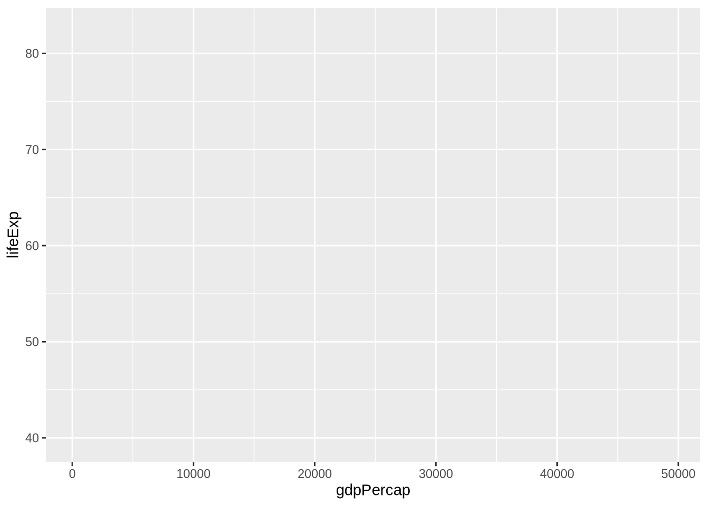
This is the base layer. The data and mappings are set, the axes are drawn, but nothing is plotted yet because no geom has been added. Every later layer — points, lines, smoothers, labels, scales — sits on top of this base.
4.7 Add A Geom Layer
geom_point() draws points. Because each row in gap_2007 is a country, each point is a country.
ggplot(
data = gap_2007,
mapping = aes(x = gdpPercap, y = lifeExp)
) +
geom_point()
The + operator means “add the next plot component.” In ggplot2, line breaks usually put + at the end of the line so R knows the plot is not finished.
4.8 Saving A Plot Object
It is often useful to store the base plot and add layers later.
p_gap <- ggplot(
data = gap_2007,
mapping = aes(x = gdpPercap, y = lifeExp)
)
p_gap +
geom_point()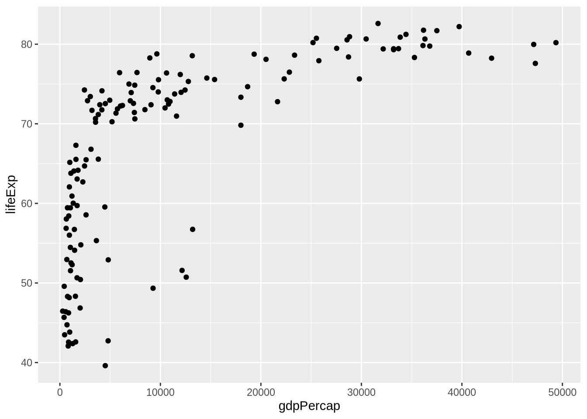
The object p_gap stores the data and default mappings. It does not lock the plot into one final form. We can keep adding layers.
4.9 Mapping Versus Setting
One of the most important ggplot2 distinctions is the difference between mapping and setting.
When an aesthetic is mapped, it goes inside aes() and represents data. In the next plot, color means continent.
p_gap +
geom_point(aes(color = continent), size = 3, alpha = 0.7)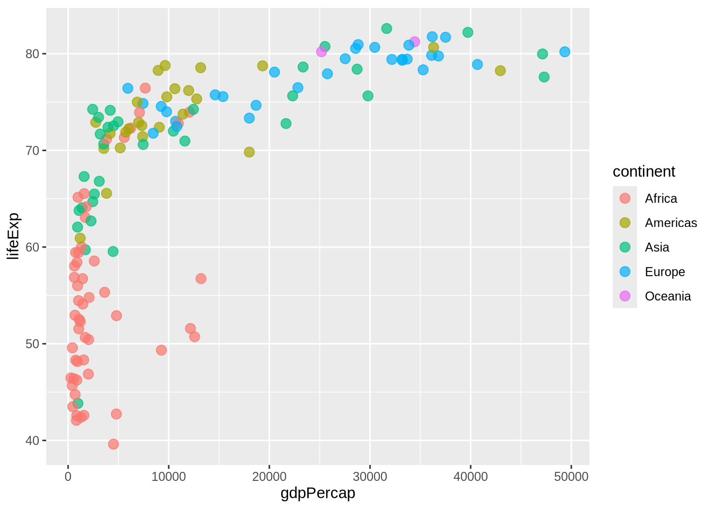
When an aesthetic is set, it stays fixed and goes outside aes(). In the next plot, all points are the same color. The color does not encode information.
p_gap +
geom_point(color = "steelblue", size = 3, alpha = 0.7)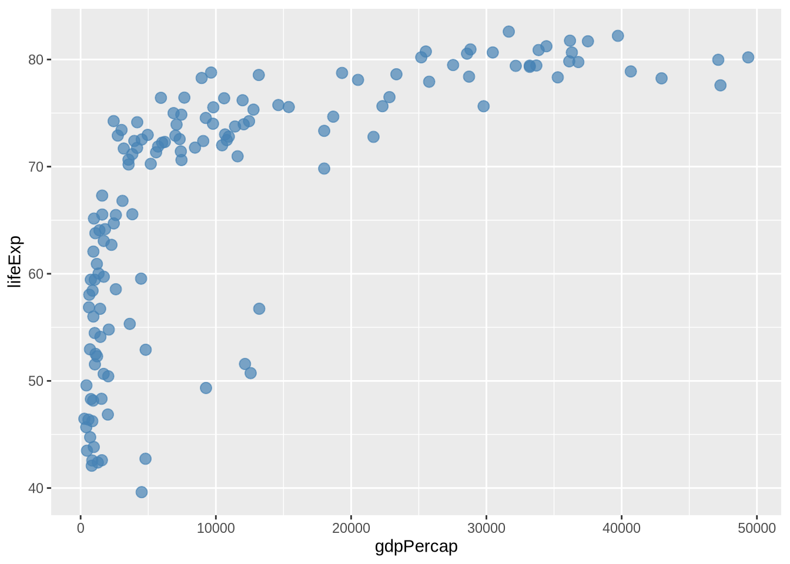
This distinction matters because viewers interpret visual differences. If color varies because it is mapped to a variable, it carries meaning. If color is fixed, it is a design choice.
A common mistake is to put a fixed color inside aes():
p_gap +
geom_point(aes(color = "steelblue"), size = 3)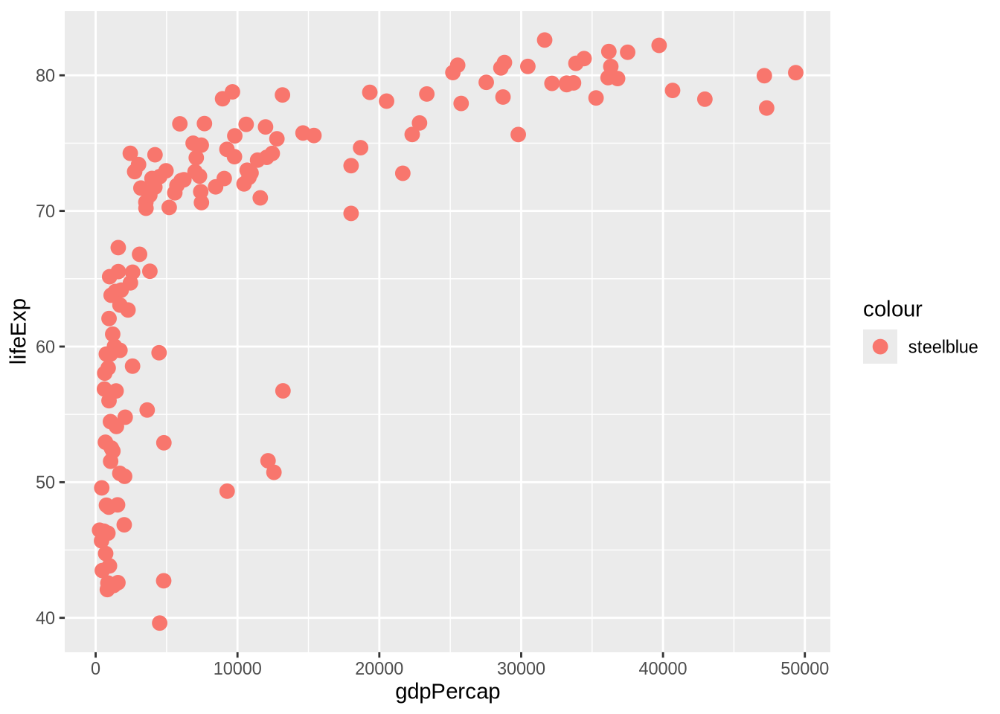
In that plot, "steelblue" is treated like a one-value variable, not as a fixed color instruction. The result is a legend that does not help the reader. The fix is to move fixed settings outside aes().
4.10 Smoothers
Scatterplots show individual observations. Smoothers add a summary of the relationship.
A linear smoother fits a straight line:
p_gap +
geom_point(alpha = 0.5) +
geom_smooth(method = "lm", formula = y ~ x)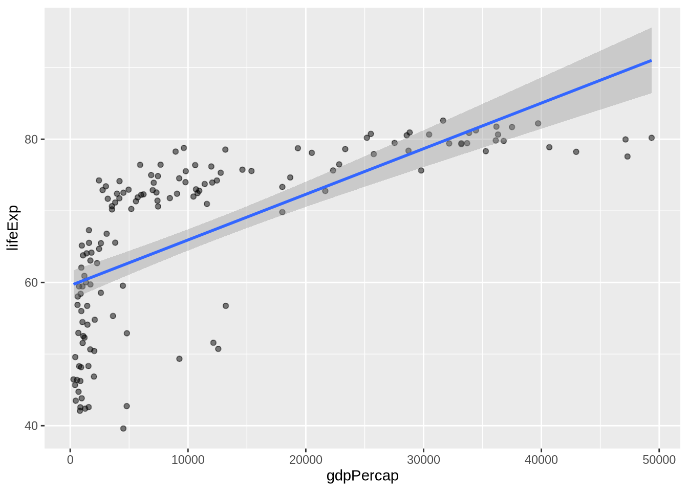
method = "lm" asks for a linear model. The formula = y ~ x part says to model the y-axis variable as a function of the x-axis variable. In this simple two-variable plot, that is the default relationship anyway, but writing it explicitly prevents ggplot2 from printing an informational message about the formula it is using.
A loess smoother is more flexible:
p_gap +
geom_point(alpha = 0.5) +
geom_smooth(method = "loess", formula = y ~ x)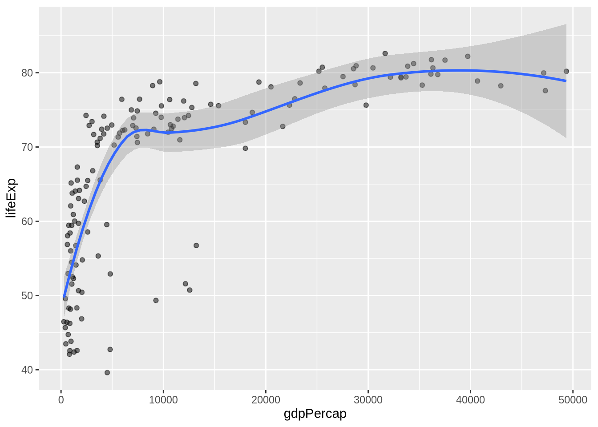
method = "loess" asks for a locally smoothed curve rather than a straight line. It can follow curvature, but it is still a descriptive summary of the plotted relationship, not proof of a causal pattern.
Neither smoother is automatically correct. A straight line is easy to interpret but may miss curvature. A loess curve can reveal bends in the data but is more descriptive than explanatory. The right choice depends on the purpose of the plot.
4.11 Log Scales
GDP per capita is usually highly skewed. A few very high values can compress most observations into the left side of the plot. A log scale spreads the lower and middle values out while keeping the order intact.
p_gap +
geom_point(alpha = 0.6) +
scale_x_log10(labels = label_dollar())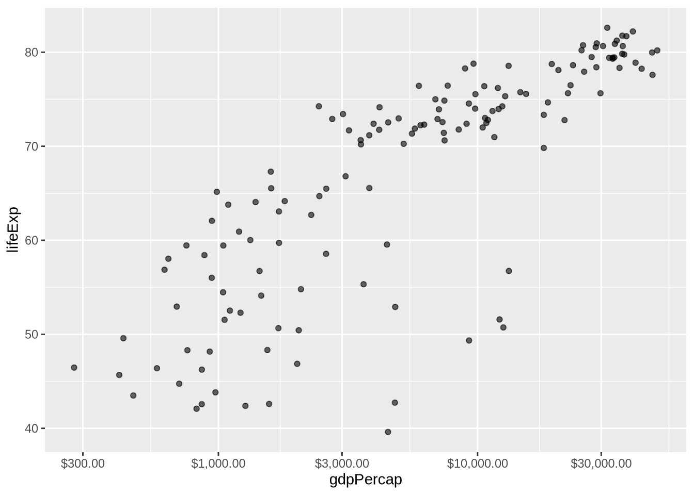
The command scale_x_log10() changes the x-axis, not the underlying data object. The argument labels = label_dollar() formats the axis as dollars instead of scientific notation.
4.12 Zooming Without Dropping Data
Sometimes the goal is to zoom in on part of a plot. coord_cartesian() changes the visible plotting window without removing observations from the data before statistics are calculated.
p_gap +
geom_point(alpha = 0.6) +
geom_smooth(method = "lm", formula = y ~ x) +
coord_cartesian(xlim = c(0, 20000), ylim = c(40, 85)) +
labs(
title = "Zooming With coord_cartesian()",
subtitle = "The view changes, but the smoother is still fit to the full data",
x = "GDP per capita",
y = "Life expectancy"
)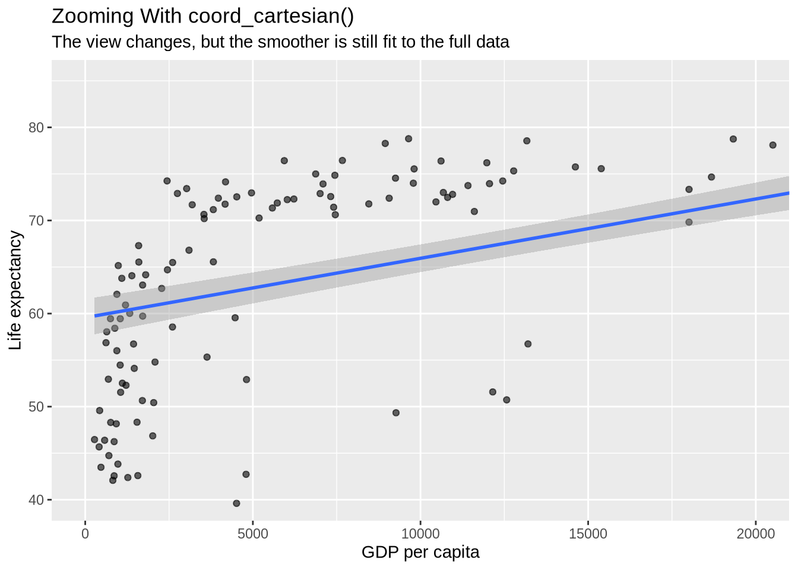
This differs from filtering the data before plotting. Filtering changes which rows are used. coord_cartesian() keeps the data and changes only the displayed region.
4.13 Setting Axis Limits Directly
Axis limits can also be set directly with scale functions. This looks similar to zooming, but it is not the same. Direct scale limits drop observations outside the limits before the plot is drawn. If a smoother or other statistical layer is included, it is fit only to the remaining visible data.
p_gap +
geom_point(alpha = 0.6) +
geom_smooth(method = "lm", formula = y ~ x) +
scale_x_continuous(limits = c(0, 20000)) +
scale_y_continuous(limits = c(40, 85)) +
labs(
title = "Setting Axis Limits Directly",
subtitle = "Rows outside the limits are dropped before the smoother is fit",
x = "GDP per capita",
y = "Life expectancy"
)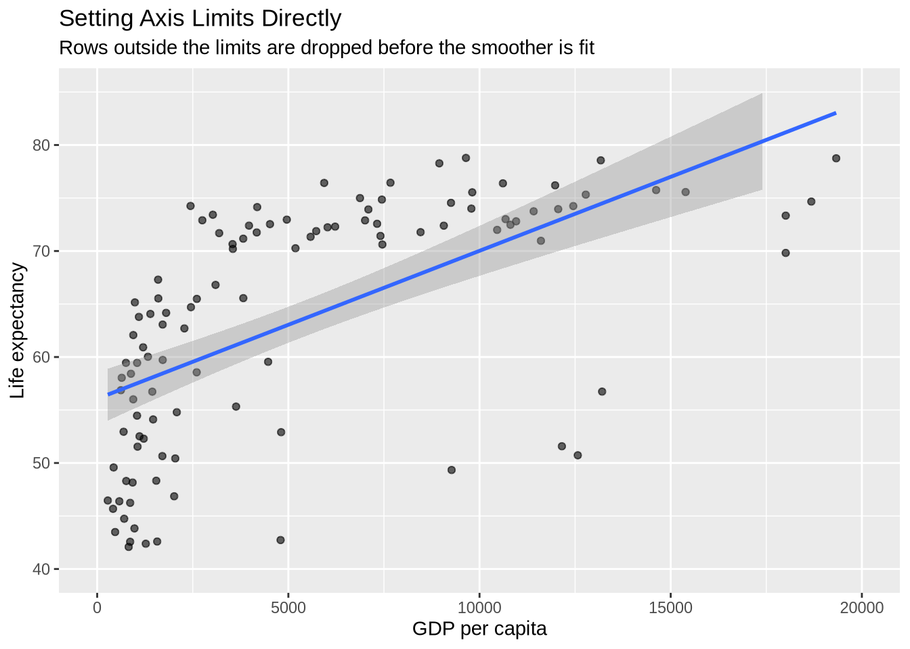
The warnings are expected: ggplot2 is reporting that observations outside the requested scale limits were removed.
The shortcut functions xlim() and ylim() do the same kind of direct scale limiting.
p_gap +
geom_point(alpha = 0.6) +
geom_smooth(method = "lm", formula = y ~ x) +
xlim(0, 20000) +
ylim(40, 85) +
labs(
title = "Setting Axis Limits With xlim() and ylim()",
subtitle = "These shortcuts also drop rows outside the limits",
x = "GDP per capita",
y = "Life expectancy"
)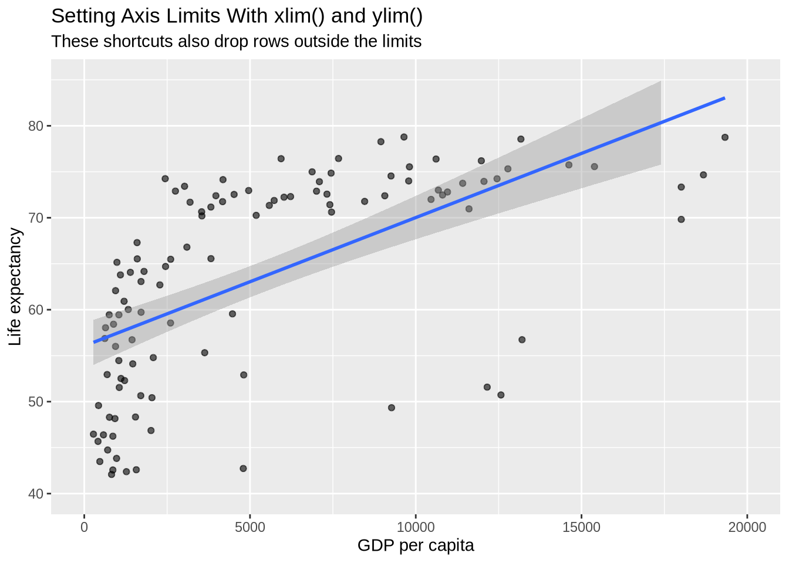
For most zooming tasks, coord_cartesian() is safer because it changes the view without changing which rows are used by the statistical layers. Direct scale limits are useful when the intention is to remove values outside the range from both the display and the plotted calculations.
4.14 Labels With labs()
Plots should be understandable outside the code chunk. labs() adds titles, subtitles, axis labels, legend labels, and captions.
p_gap +
geom_point(aes(color = continent), alpha = 0.7, size = 3) +
scale_x_log10(labels = label_dollar()) +
labs(
title = "Life Expectancy Rises With GDP Per Capita",
subtitle = "Countries in the most recent year available in the course data",
x = "GDP per capita, log scale",
y = "Life expectancy",
color = "Continent",
caption = "Source: Gapminder course data"
)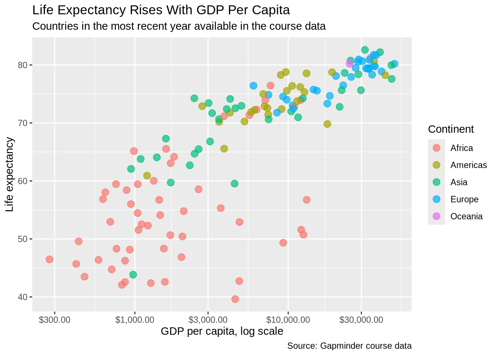
The title tells the reader the main subject. The subtitle adds context. Axis labels state the meaning of the plotted variables. The legend title clarifies the mapped aesthetic. The caption is a natural place for data source information.
4.15 Themes
Themes control the non-data parts of the plot: background, grid lines, axis text, title placement, legend placement, and similar elements. A theme does not change the data being shown, but it can change how easy the plot is to read.
p_gap + geom_point() + theme_bw()p_gap + geom_point() + theme_minimal()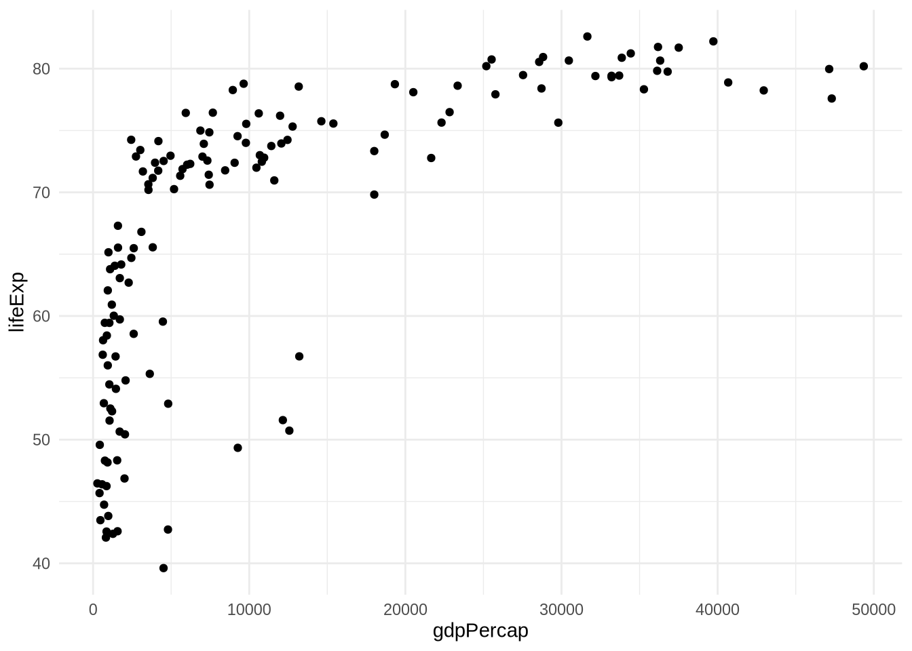
p_gap + geom_point() + theme_classic()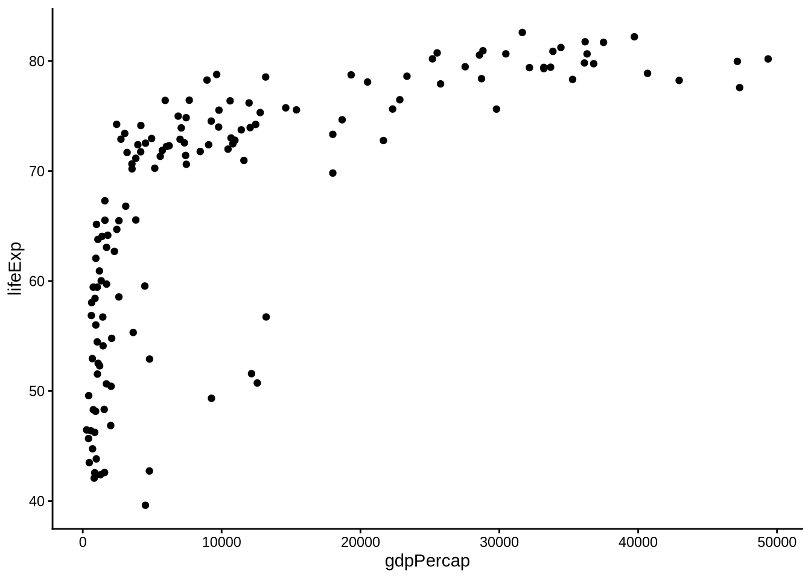
Built-in themes are good starting points. Individual elements can then be adjusted with theme().
p_gap +
geom_point() +
theme_minimal() +
theme(
plot.title = element_text(size = 16, face = "bold"),
plot.subtitle = element_text(size = 11),
axis.title = element_text(size = 11),
panel.grid.minor = element_blank()
)The theme() function changes individual non-data elements. The element functions describe what kind of thing is being changed:
element_text()changes text, such as titles, axis labels, tick labels, and legend text.element_blank()removes an element completely.element_line()changes lines, such as grid lines and axis lines.legend.positioncontrols where the legend appears.
p_gap +
geom_point(aes(color = continent), alpha = 0.75, size = 2) +
scale_x_log10(labels = label_dollar()) +
labs(
title = "Theme Elements Control Non-Data Design",
subtitle = "Text, grid lines, and legend placement are adjusted separately",
x = "GDP per capita, log scale",
y = "Life expectancy",
color = "Continent"
) +
theme_minimal() +
theme(
plot.title = element_text(face = "bold", size = 16),
axis.text.x = element_text(angle = 45, hjust = 1),
panel.grid.minor = element_blank(),
legend.position = "bottom"
)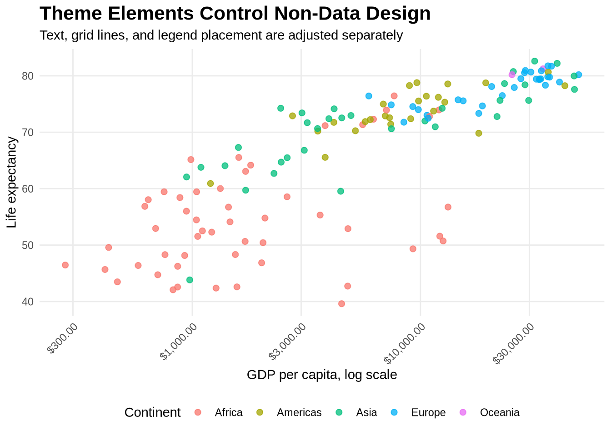
Rotating axis text is useful when labels are long or crowded. Removing minor grid lines can make a figure less busy. Moving the legend to the bottom can help when a plot is wide and there is more horizontal than vertical room.
4.16 Theme Packages
Additional packages provide complete theme systems. These are useful when a plot needs to match a report style, publication style, or visual identity.
The ggthemes package includes themes that imitate familiar publication and media styles.
p_gap +
geom_point(aes(color = continent), alpha = 0.75, size = 2) +
scale_x_log10(labels = label_dollar()) +
labs(
title = "A ggthemes Style",
x = "GDP per capita, log scale",
y = "Life expectancy",
color = "Continent"
) +
ggthemes::theme_fivethirtyeight()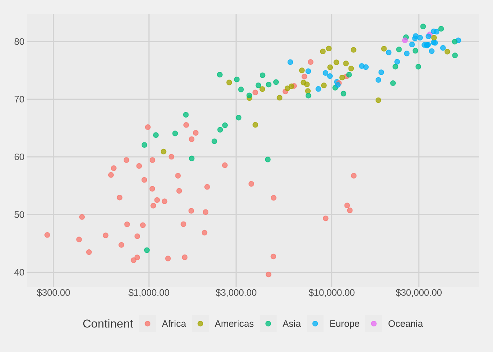
p_gap +
geom_point(aes(color = continent), alpha = 0.75, size = 2) +
scale_x_log10(labels = label_dollar()) +
labs(
title = "Another ggthemes Style",
x = "GDP per capita, log scale",
y = "Life expectancy",
color = "Continent"
) +
ggthemes::theme_economist()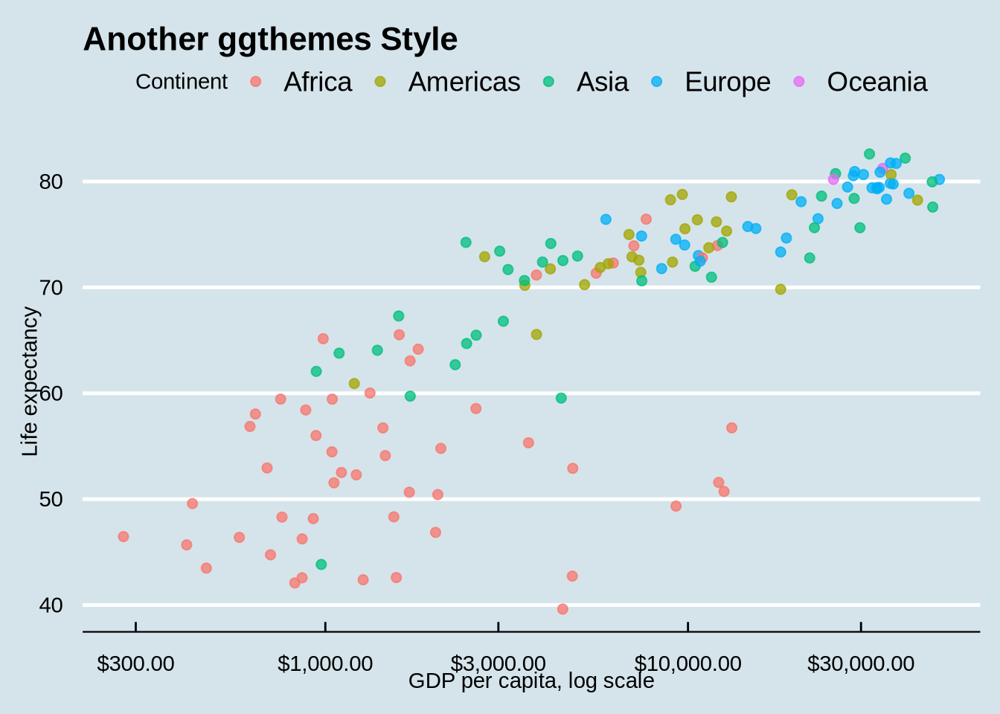
The hrbrthemes package focuses on restrained typography and clean spacing. Its themes tend to use lighter grid lines, larger readable text, and a report-like visual style. They are also simply aesthetically pleasing, which matters: an attractive figure is often more inviting, more memorable, and easier to take seriously. This is useful when the figure should feel more like an editorial or analytic graphic than a default software output.
Typography matters because plots are read as documents. Titles, subtitles, axis labels, legends, and captions all guide interpretation. A theme with better spacing and text hierarchy can make the same data feel more deliberate and easier to scan.
p_gap +
geom_point(aes(color = continent), alpha = 0.75, size = 2) +
scale_x_log10(labels = label_dollar()) +
labs(
title = "A Clean Report Theme",
x = "GDP per capita, log scale",
y = "Life expectancy",
color = "Continent"
) +
hrbrthemes::theme_ipsum(base_family = "sans")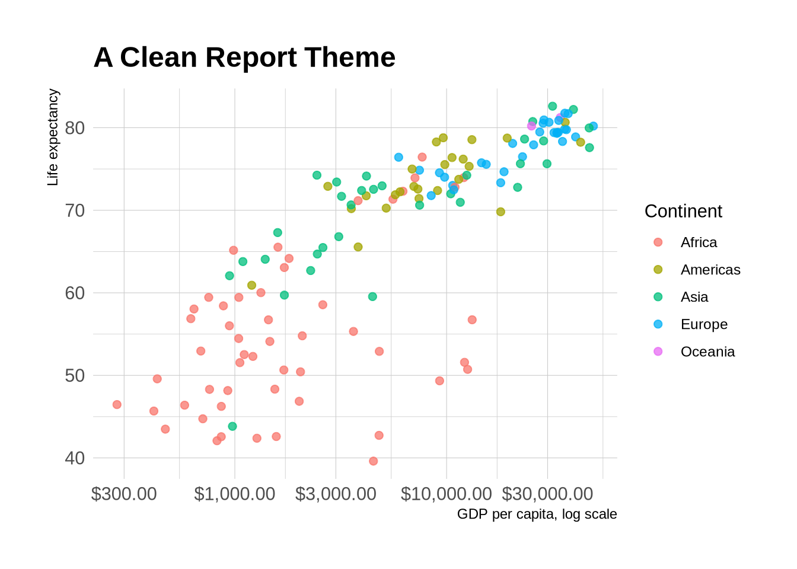
The same plot can be sent through related hrbrthemes themes. The point is not that one theme is objectively correct. The point is that theme choice changes the typography, spacing, grid emphasis, and overall feel of the figure.
p_gap +
geom_point(aes(color = continent), alpha = 0.75, size = 2) +
scale_x_log10(labels = label_dollar()) +
labs(
title = "A Clean Report Theme",
x = "GDP per capita, log scale",
y = "Life expectancy",
color = "Continent"
) +
hrbrthemes::theme_ipsum_rc()p_gap +
geom_point(aes(color = continent), alpha = 0.75, size = 2) +
scale_x_log10(labels = label_dollar()) +
labs(
title = "A Publication-Oriented Report Theme",
x = "GDP per capita, log scale",
y = "Life expectancy",
color = "Continent"
) +
hrbrthemes::theme_ipsum_pub()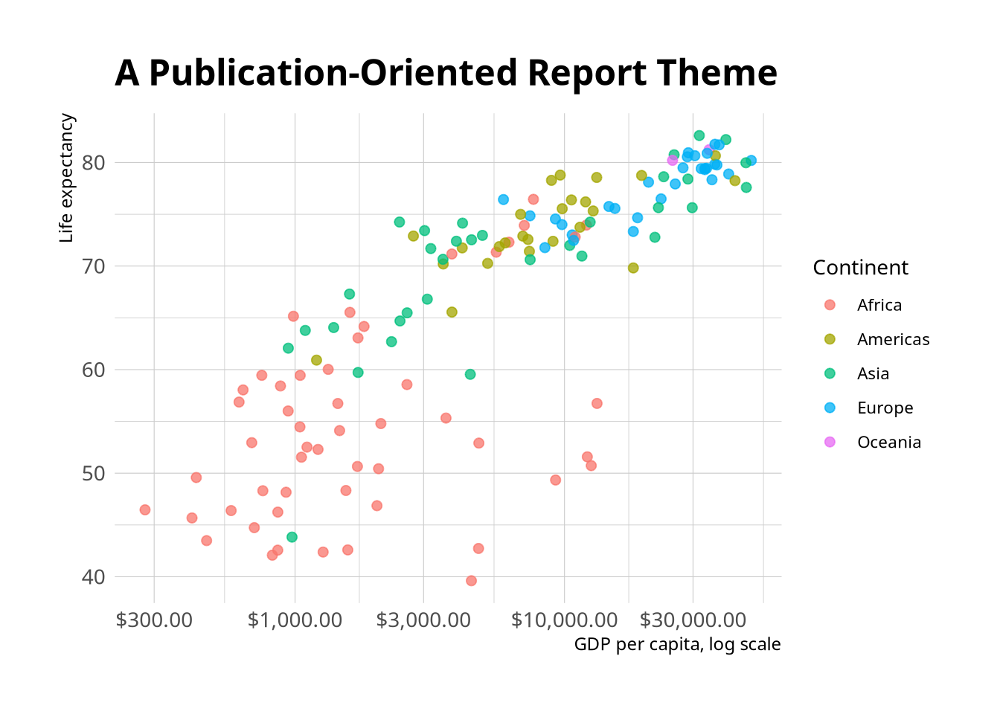
The rc names refer to Roboto Condensed, the font family these themes were designed around. The first variant changes the grid and axes to make the style visibly different. The second uses a publication-oriented theme with a different typographic feel.
These theme packages change the overall style, but the plot still needs clear mappings, labels, scales, and a readable comparison.
4.17 Color Palettes
Default colors are fine for early drafts. For more intentional figures, choose palettes that match the type of data.
- Qualitative palettes distinguish categories with no natural order.
- Sequential palettes show ordered values from low to high.
- Diverging palettes show distance from a meaningful midpoint.
Start from a plot that maps a categorical variable to color:
p_gap_color <- p_gap +
geom_point(aes(color = continent), alpha = 0.75, size = 2) +
scale_x_log10(labels = label_dollar()) +
labs(
x = "GDP per capita, log scale",
y = "Life expectancy",
color = "Continent"
) +
theme_minimal()
p_gap_color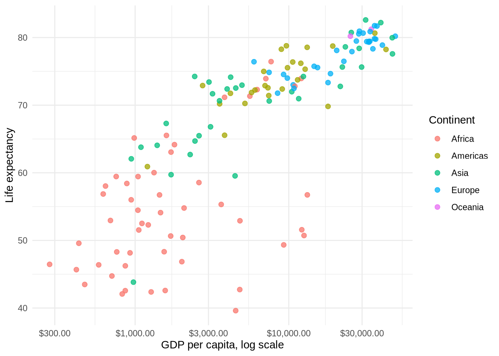
RColorBrewer provides many named palettes.
p_gap_color +
scale_color_brewer(palette = "Set2") +
labs(subtitle = "A qualitative palette for unordered categories")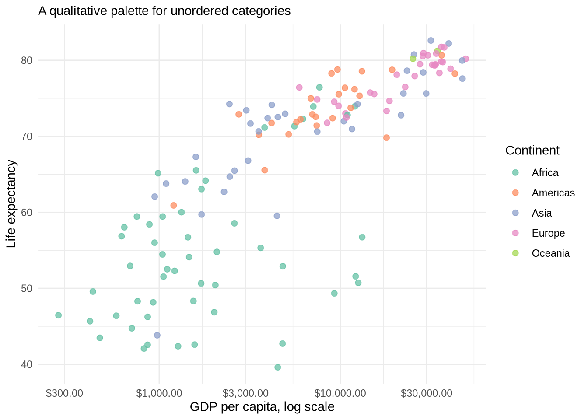
The viridis scales are also useful because they are designed to be readable in color and when converted to grayscale.
p_gap_color +
scale_color_viridis_d(option = "plasma") +
labs(subtitle = "A discrete viridis palette")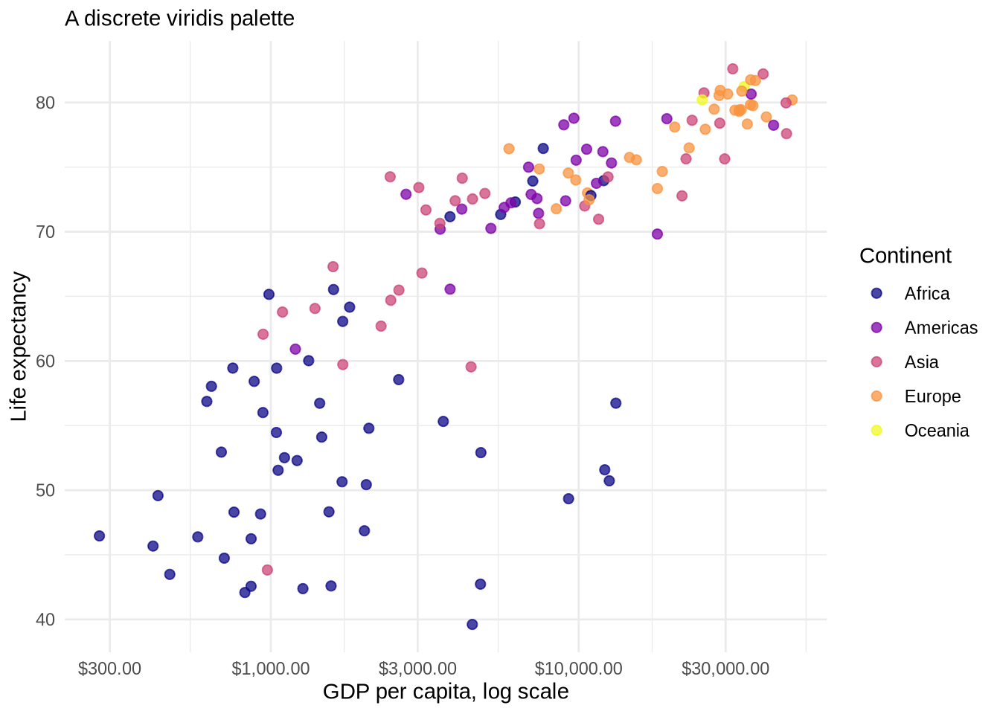
Diverging palettes are useful when a variable has a meaningful midpoint, such as zero, parity, or an average. They are especially natural in maps because the color immediately shows which places are above or below the midpoint. Chapter 12 returns to this idea with a choropleth map.
Manual color scales are useful when specific categories should keep specific colors across several plots.
continent_colors <- c(
"Africa" = "firebrick",
"Americas" = "steelblue",
"Asia" = "forestgreen",
"Europe" = "darkorchid",
"Oceania" = "darkorange"
)
p_gap_color +
scale_color_manual(values = continent_colors) +
labs(subtitle = "Manually assigned continent colors")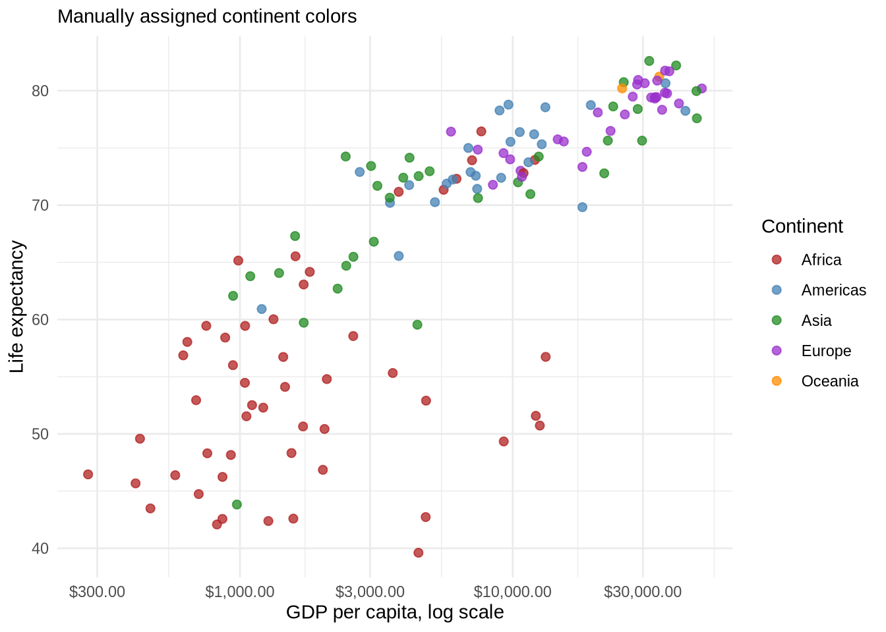
4.18 Putting It All Together
Each piece of this chapter has been introduced as one layer at a time. The full plot stacks them in order: base layer, point geom, smoother, scale, labels, palette, theme.
ggplot(
data = gap_2007,
mapping = aes(x = gdpPercap, y = lifeExp)
) +
geom_point(aes(color = continent), alpha = 0.7, size = 2) +
geom_smooth(method = "lm", formula = y ~ x, se = FALSE, color = "gray30") +
scale_x_log10(labels = label_dollar()) +
scale_y_continuous(breaks = seq(30, 90, by = 10)) +
scale_color_brewer(palette = "Set2") +
labs(
title = "Life Expectancy Rises With GDP Per Capita",
subtitle = "Countries in the most recent year available in the course data",
x = "GDP per capita, log scale",
y = "Life expectancy",
color = "Continent",
caption = "Source: Gapminder course data"
) +
theme_minimal()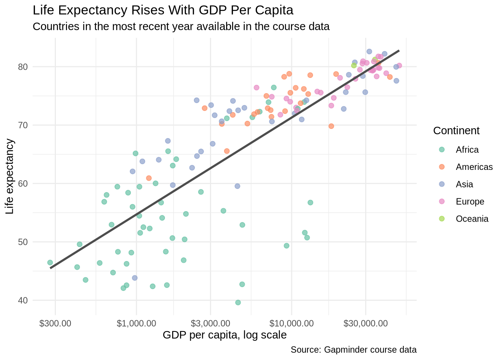
Read the code from the top:
ggplot(...)sets the base layer with data and mappings.geom_point(...)draws each country as a point and maps continent to color.geom_smooth(...)adds a single linear summary across all continents.scale_x_log10(...)transforms the x-axis so the lower values are easier to read.scale_color_brewer(...)swaps the default palette for a qualitative one.labs(...)adds the title, subtitle, axis labels, legend title, and caption.theme_minimal()controls the non-data styling.
If the plot needs to change, the line responsible for that change is usually easy to identify.
scale_y_continuous(breaks = seq(30, 90, by = 10)) controls where tick marks appear on the y-axis. The seq() function generates a sequence from 30 to 90 in steps of 10. Without it, R chooses the breaks automatically, which is often fine, but explicit breaks can make the grid easier to read when the data spans a predictable range.
4.19 Saving Plots
ggsave() saves the most recently printed plot to a file. The two most useful arguments are filename and the dimensions width and height in inches.
ggsave(filename = "Plots/gdp_life_expectancy.png", width = 8, height = 5)
ggsave(filename = "Plots/gdp_life_expectancy.pdf", width = 8, height = 5)By default, ggsave() saves the last plot displayed. To save a specific plot object, use the plot argument:
my_plot <- p_gap + geom_point()
ggsave(filename = "Plots/my_plot.png", plot = my_plot, width = 8, height = 5)PNG is a good choice for slides, web pages, and Word documents. PDF is better for print and LaTeX documents because it is a vector format and stays sharp at any size.
4.20 Short Exercise
The built-in mtcars dataset is always available. Convert it to a tibble first so the car names become a column:
cars_tbl <- mtcars |>
as_tibble(rownames = "car")Using cars_tbl, build a scatterplot with:
hpon the x-axismpgon the y-axiscylmapped to color- a linear smoother with
se = FALSE - readable labels with
labs()
# Write your code here.4.21 Text as Labels
The core scatterplot pipeline above uses titles and axis labels to make the figure readable. Sometimes the data points themselves also need labels. Points can be labeled with text using the label aesthetic. geom_text() draws text at the mapped x and y position for each row in the data.
Text labels are most useful when the units have meaningful names — country codes, state abbreviations, party names — that help the reader identify specific observations.
State-level data is a natural fit. The Correlates of State Policy Project tracks public opinion and policy outputs across all U.S. states over several decades. Two variables are especially useful as a starting point:
pid: net partisanship — Democratic minus Republican party identification, as a share of the adult populationideo: net ideology — liberal minus conservative self-identification
We filter to a single year so each state appears once.
states <- read_csv("Data/state_policy/cspp_states.csv", show_col_types = FALSE)
states_2000 <- states |> filter(year == 2000)The first version maps full state names to label. Every point gets the state name written at its location.
ggplot(states_2000, aes(x = pid, y = ideo)) +
geom_text(aes(label = state)) +
labs(
title = "State Partisanship and Ideology, 2000",
x = "Net partisanship (Dem - Rep)",
y = "Net ideology (Liberal - Conservative)"
) +
theme_minimal()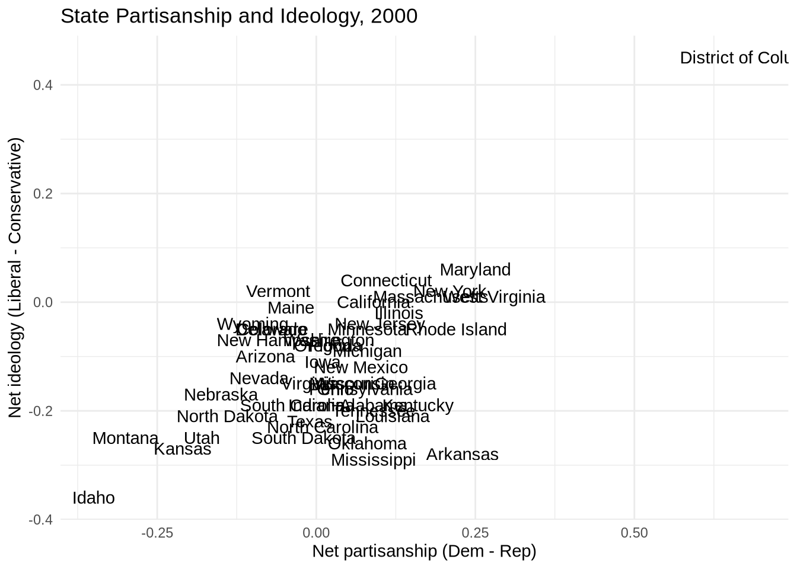
Full names crowd together badly. Switching to two-letter abbreviations is better.
ggplot(states_2000, aes(x = pid, y = ideo)) +
geom_text(aes(label = st), size = 3.5) +
labs(
title = "State Partisanship and Ideology, 2000",
x = "Net partisanship",
y = "Net ideology"
) +
theme_minimal()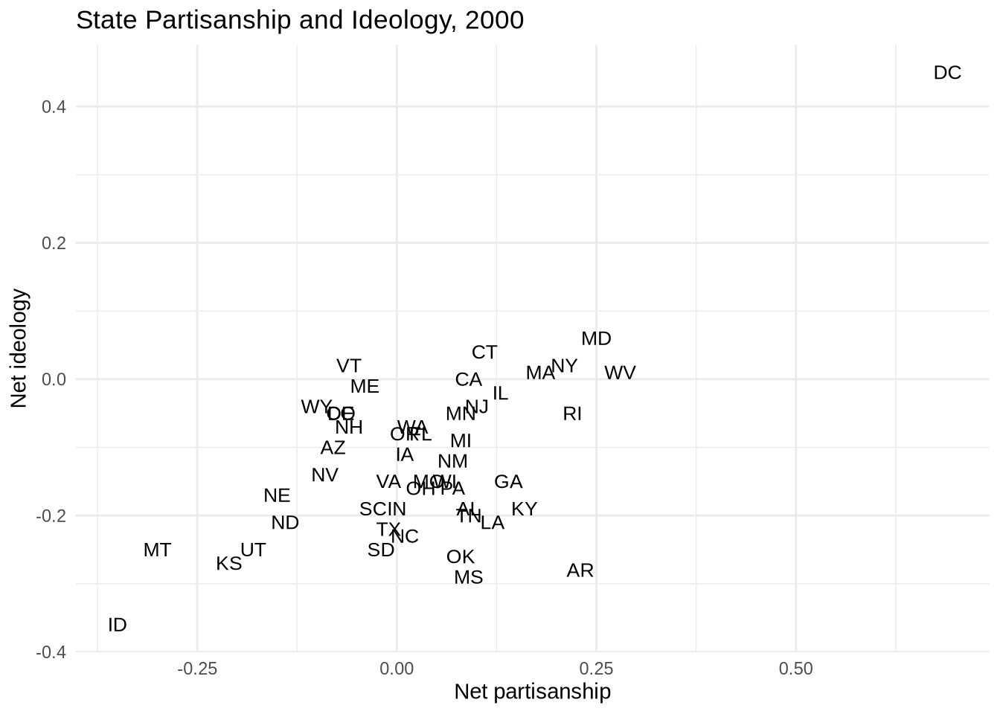
Some abbreviations still overlap where states cluster near each other. geom_text_repel() from the ggrepel package moves labels slightly to reduce overlap and draws a short line segment back to the point when it has to move far.
ggplot(states_2000, aes(x = pid, y = ideo)) +
geom_text_repel(aes(label = st), size = 3.5) +
labs(
title = "State Partisanship and Ideology, 2000",
x = "Net partisanship",
y = "Net ideology"
) +
theme_minimal()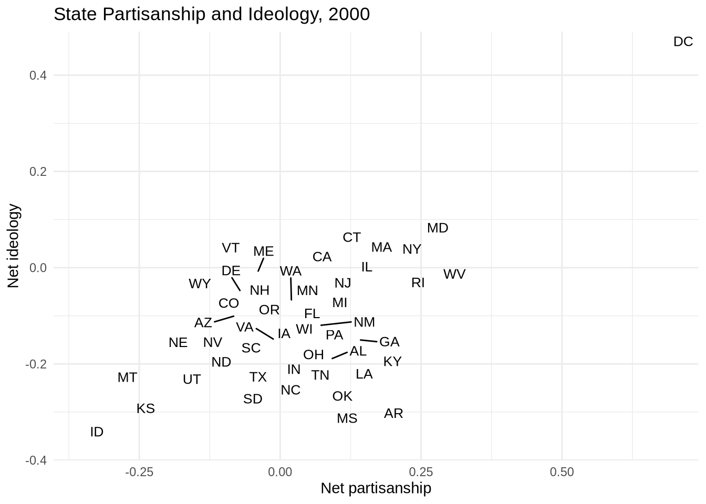
A linear smoother added underneath shows the overall relationship. The label aesthetic is defined only in geom_text_repel(), so it does not apply to geom_smooth().
ggplot(states_2000, aes(x = pid, y = ideo)) +
geom_smooth(method = "lm", formula = y ~ x, se = FALSE, color = "gray50") +
geom_text_repel(aes(label = st), size = 3.5) +
scale_x_continuous(labels = label_percent()) +
scale_y_continuous(labels = label_percent()) +
labs(
title = "State Partisanship and Ideology, 2000",
x = "Net partisanship",
y = "Net ideology",
caption = "Source: Correlates of State Policy Project"
) +
theme_minimal()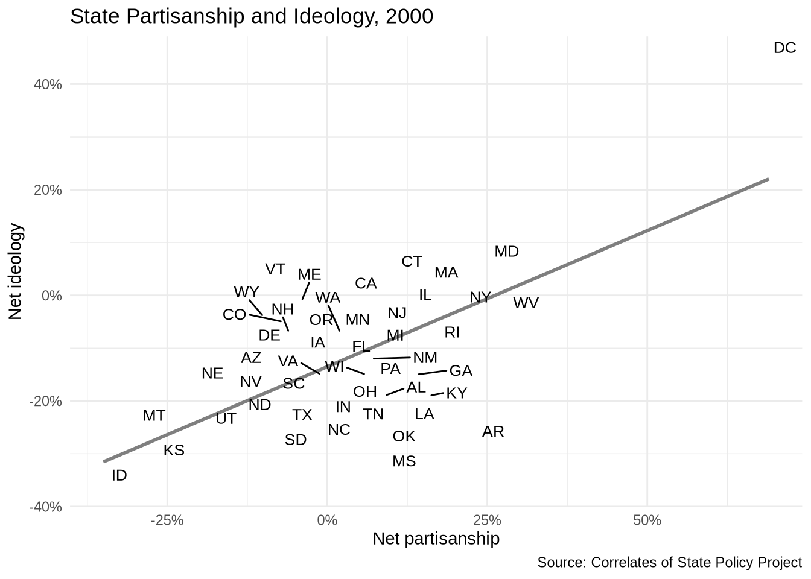
Partisanship and ideology track closely together, but several states sit noticeably above or below the line. The labels make those outliers immediately identifiable.
4.22 Formatting Numbers
The scales package provides label functions that change how numbers print on axes and legends. These functions do not change the underlying data. They only change the displayed labels.
label_percent() formats proportions as percentages. Since pid and ideo are proportions — the difference between Democratic and Republican shares of the population — displaying them as percentages is more natural than as decimals.
label_dollar() formats numbers as dollars. That is why GDP per capita can appear as $1,000 or $10,000 instead of plain numbers.
label_comma() adds comma separators to large numbers without shortening them. This is useful when the exact number should remain visible.
Large numbers often need compact labels. label_number(scale_cut = cut_short_scale()) prints values using short suffixes such as K, M, and B. This is useful for population, budgets, counts, and other variables where full numbers would make the axis or legend hard to scan.
The accuracy argument controls rounding. For example, accuracy = 0.1 keeps one decimal place, while accuracy = 1 rounds to whole numbers.
example_numbers <- c(0.1234, 1200, 5400000, 1250000000)
label_percent(accuracy = 1)(example_numbers[1])[1] "12%"label_dollar()(example_numbers[2:3])[1] "$1,200" "$5,400,000"label_comma()(example_numbers[2:4])[1] "1,200" "5,400,000" "1,250,000,000"label_number(scale_cut = cut_short_scale())(example_numbers[2:4])[1] "1K" "5M" "1B"label_number(accuracy = 0.1)(c(12.345, 67.891))[1] "12.3" "67.9"4.23 Continuous Aesthetics
Aesthetics can represent continuous variables as well as categories. A categorical aesthetic separates groups, such as continents. A continuous aesthetic represents a numeric variable, such as population or income.
4.23.1 Continuous Color
Color can represent a continuous variable. In the next plot, color represents population. Population is highly skewed: a few very large countries are much bigger than the rest. A log-transformed color scale spreads out the smaller and mid-sized countries so the colors are easier to distinguish. scale_color_viridis_c() uses a continuous viridis palette, and the labels argument applies the compact number labels introduced above.
p_gap +
geom_point(aes(color = pop), size = 3, alpha = 0.8) +
scale_x_log10(labels = label_dollar()) +
scale_color_viridis_c(
trans = "log10",
labels = label_number(scale_cut = cut_short_scale())
) +
labs(
title = "Population Can Be Mapped To Color",
x = "GDP per capita, log scale",
y = "Life expectancy",
color = "Population"
)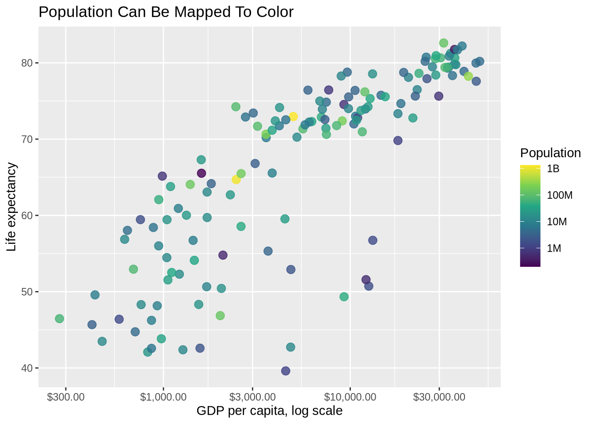
This is possible, but it is not always the best choice. Continuous color scales can be hard to read precisely. They work best when the numeric variable adds useful context rather than simply making the plot look more complex.
4.23.2 Continuous Size
Size can also represent a continuous variable. In the next plot, population controls point size. scale_size_continuous() controls the size scale and the size legend.
p_gap +
geom_point(aes(size = pop), color = "steelblue", alpha = 0.65) +
scale_x_log10(labels = label_dollar()) +
scale_size_continuous(labels = label_number(scale_cut = cut_short_scale())) +
labs(
title = "Population Can Be Mapped To Point Size",
x = "GDP per capita, log scale",
y = "Life expectancy",
size = "Population"
)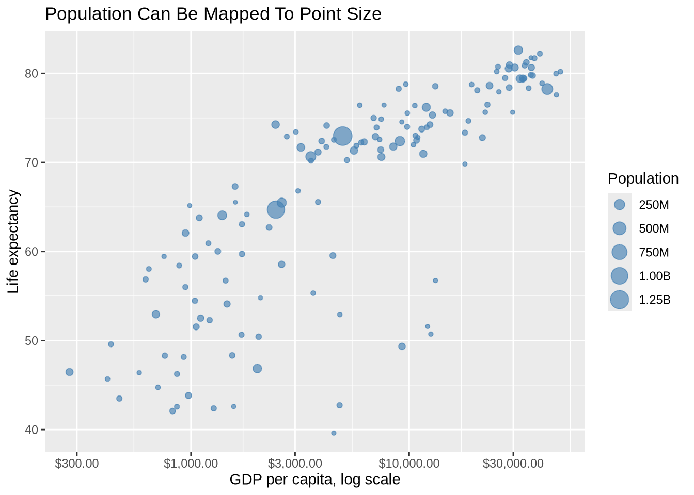
Size is often intuitive, but it is not very precise. Readers can usually see which points are much larger or much smaller, but they cannot easily compare exact values by area. That makes size useful for broad emphasis, not for precise measurement.
4.24 Extras: Shape And Size
Several aesthetics can be combined. Shape works best for a small number of categories. Size can work for quantities, but the plot gets harder to read as more encodings are added.
ggplot(gap_2007, aes(x = gdpPercap, y = lifeExp)) +
geom_point(aes(shape = continent, size = pop), alpha = 0.7) +
scale_x_log10(labels = label_dollar()) +
labs(
title = "Several Aesthetics Can Be Used At Once",
x = "GDP per capita, log scale",
y = "Life expectancy",
shape = "Continent",
size = "Population"
)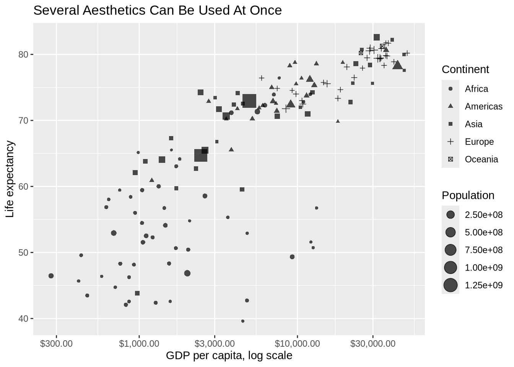
Adding more aesthetics is not automatically an improvement. Each additional encoding asks the reader to do more work. If it aids the goal of communication, then it’s worth it.
4.25 Extras: Rich Text
ggtext allows limited Markdown and HTML-like formatting inside plot text. This is useful for emphasizing one phrase in a title or coloring part of a subtitle.
p_gap_color +
labs(
title = "Economic Growth and **Life Expectancy**",
subtitle = "Countries in <span style='color:darkorange;'>2007</span>"
) +
theme_minimal() +
theme(
plot.title = ggtext::element_markdown(),
plot.subtitle = ggtext::element_markdown()
)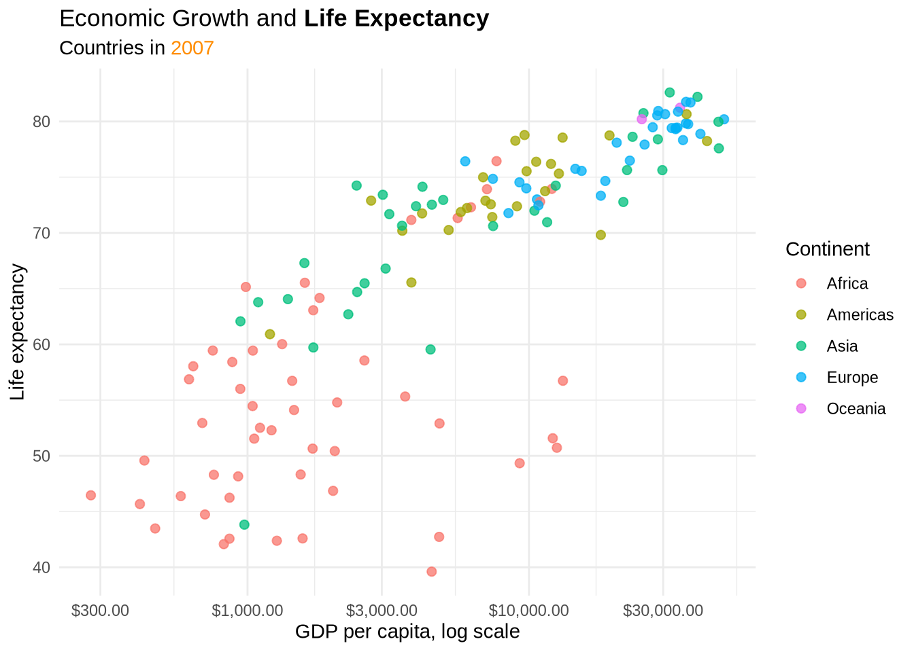
4.26 What Comes Next
The next chapter moves from basic plot construction to visual comparison: separating groups with color, facets, small multiples, free scales, direct labels, and combining plots with patchwork. The focus shifts from making a plot work to making a comparison easier to see.